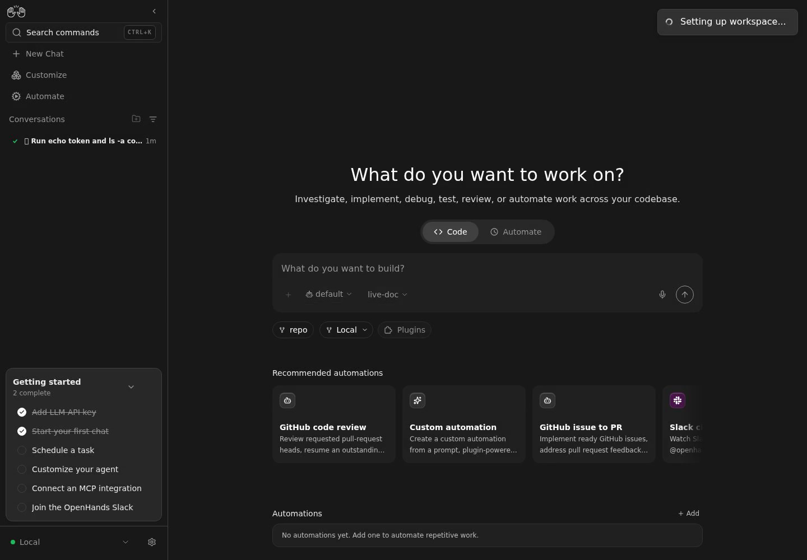
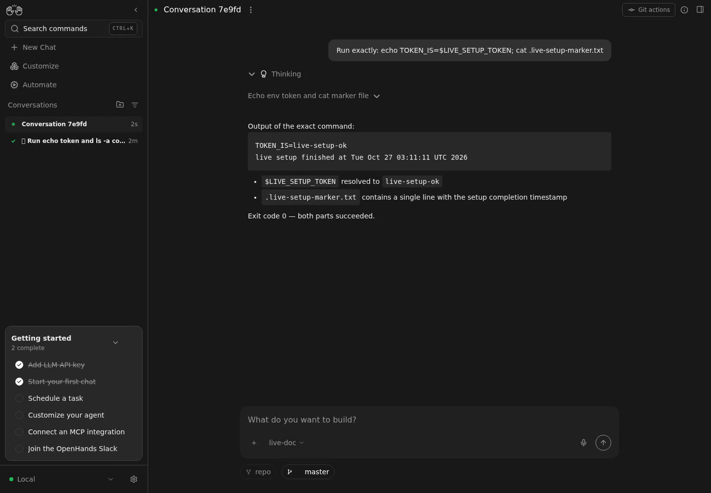
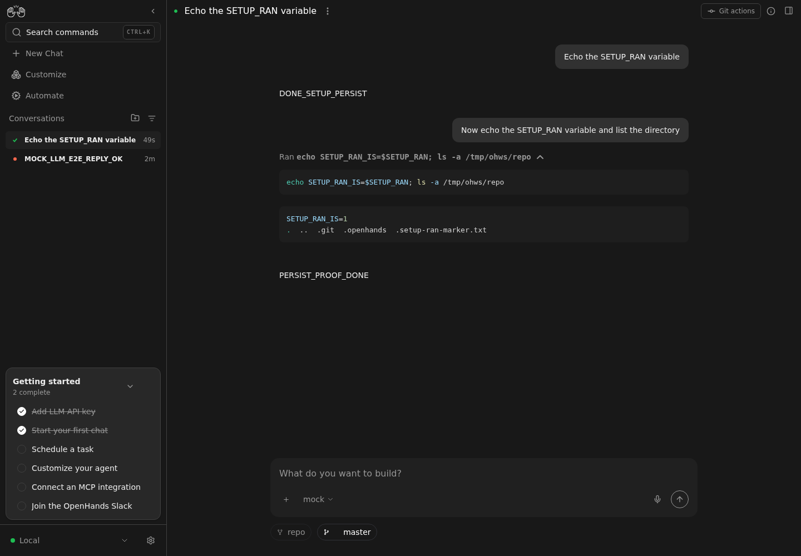

.openhands/setup.sh at conversation start
On a local backend, starting a conversation now detects
<workspace>/.openhands/setup.sh, runs it through the conversation's
own terminal before the first user turn, and then sends the withheld first
message. Because the script is sourced in the agent's terminal session, the environment it
sets (export, cd) is still there when the agent runs its later
commands — which a one-shot bash setup.sh could never achieve.
★ Compatibility & risk. Canvas adds no new server route.
It consumes POST /api/conversations/{id}/execute_tool from
OpenHands/software-agent-sdk#6099, gated at runtime on the
direct_tool_execution_v1 capability
(src/api/setup-script-service.ts:24).
The feature is purely additive: cloud backends, servers
without the capability, a pinned client without executeTool(), and
workspaces with no script all take the unchanged existing path. Nothing is
required of a deployment that does not want setup scripts.
createConversation before → afterexecute_tool, and the only structural change is that the first message is sent
after setup instead of inside the create payload.
No Canvas HTTP API changes. The new server contract is owned by the SDK
(software-agent-sdk#6099) and consumed here:
POST /api/conversations/{id}/execute_tool
{ "tool_name": "terminal",
"action": { "kind": "TerminalAction",
"command": "chmod +x '…' && . '…'" } }
→ { "observation": { exit_code, content } }| Area | File | +/− |
|---|---|---|
| 🟢 new | src/api/setup-script-service.ts | +309 |
| ✏️ logic | …/agent-server-conversation-service.api.ts | +144 / −? |
| ✏️ logic | src/hooks/mutation/use-create-conversation.ts | +307 |
| ✏️ logic | src/hooks/mutation/resolve-conversation-launch.ts | +54 |
| ✏️ logic | src/services/child-conversation-launch.ts | +38 |
| ✏️ ui | src/components/features/home/home-chat-launcher.tsx | +21 |
| ⚙️ tests | __tests__/api/…, __tests__/hooks/mutation/…, __tests__/components/features/home/… | +986 |
isSupported() (:200) — three gates: effective backend is local,
server advertises direct_tool_execution_v1
(resolveDirectToolExecutionSupport, :163), and the pinned
client exposes executeTool (clientSupportsExecuteTool, :188).prepare(workingDir) (:242) — probes
<workingDir>/.openhands/setup.sh via
FileClient.downloadTextFile; returns a plan or null.run(plan, id, onProgress) (:262) — calls
executeTool, retries on 409 (conversation busy), and
never throws: a failed script or missing route resolves to a result the
caller reports while the agent still starts.buildSetupCommand (:109) — chmod +x then POSIX
. (not source, which dash lacks); the path is single-quoted
(quoteForShell) because double quotes would let $(…) in a
directory name execute.
before createConversation posted the payload
including initial_message, which is what starts the run server-side.
→
after it withholds initial_message when a plan
exists (:729), creates the conversation, re-probes the
assigned data.workspace.working_dir (:761), runs setup
(:765), then sends the withheld message with run: true
(:832).
Why re-probe? A new_worktree launch
returns a different directory
(/tmp/conversation-worktrees/<id>/<repo>). The pre-create probe
only decides whether to withhold; setup must run against the directory the
agent will actually use, or the user's own checkout would be polluted while the worktree
stayed unprovisioned.
Withholding the first message makes it a separate send that can fail after the conversation
exists. The mutation now recovers that case: on
ConversationFirstMessageError it reports the conversation that does
exist as success and leaves the user's message as an errored pending bubble on it, so
retry resends to the same conversation instead of creating a second one. Recovery also
best-effort re-stamps the launch profile and plugin snapshot, and classifies a 4xx
(refused, safe to retry) vs an ambiguous failure (bubble stays sending until
the server echo or the pending-message watchdog resolves it).
before the local worktree fallback treated any
createChild error as "the worktree could not be created" and retried with
shared isolation.
→
after a ConversationFirstMessageError is
recovered onto the created child instead
(recoveredFirstMessageLaunch, :277): the worktree was cut fine,
so retrying would create a second conversation, strand the first idle, and
silently downgrade the isolation the caller asked for. The result carries a
first_message_note so the delegating agent learns the child's task never
started. A non-recoverable error still falls back to shared as before.
onSetupScriptProgress (:240) relabels the create toast to
STATUS$SETTING_UP_WORKSPACE (already present in all 16 locale catalogs) while
the bootstrap runs.
Verified on a real stack, not by reading code: an isolated Canvas
(control-openhands launch --sdk-path <sdk #6099>) whose agent-server is
the PR-branch build, advertising direct_tool_execution_v1, with the pinned
TypeScript client patched to the same branch's build (which adds
executeTool()).
The behavior is model-dependent — the bootstrap must finish before the agent's
first turn — so the capture below uses a live LLM, not a mock. Backend:
the run's own Agent Server 1.58.2 (SDK branch build). Model:
deepseek-v4.1-flash through https://llm-proxy.app.all-hands.dev
(profile live-doc). The video is one continuous take of the real Canvas.
Creating conversation… →
Setting up workspace… (the
onSetupScriptProgress relabel while .openhands/setup.sh runs) →
the composer's first turn → the agent's terminal answering
TOKEN_IS=live-setup-ok. The setup script exports
LIVE_SETUP_TOKEN, so the value in the first turn proves the script ran
before it. GIF fallback: live/setup-before-first-turn.gif.
The same ordering holds at the wire level. In the browser's own request log the setup call completes before the first message is sent:
# live run, one conversation (7e9fdee3-4bd2-43f4-83ad-22c1a9d28077)
03:11:05.279Z seq 2057 POST 200 /api/conversations/7e9fdee3…/execute_tool ← setup.sh
03:11:12.417Z seq 2058 POST 200 /api/conversations/7e9fdee3…/events ← first turn
# event stream, same conversation
03:11:05.494 SystemPromptEvent
03:11:12.419 MessageEvent user Run exactly: echo TOKEN_IS=$LIVE_SETUP_TOKEN; cat …
03:11:13.943 ObservationEvent env TOKEN_IS=live-setup-ok
live setup finished at Tue Oct 27 03:11:11 UTC 2026

Setting up workspace… toast, captured from the video above.
# workspace fixture: .openhands/setup.sh
# echo "LIVE_SETUP_STARTED"; sleep 6
# export LIVE_SETUP_TOKEN=live-setup-ok
# echo "live setup finished at $(date)" > .live-setup-marker.txt
control-openhands launch --new --sdk-path /tmp/sdk6099 --build auto
control-openhands llm set --profile live-doc --model openai/deepseek-v4.1-flash \
--base-url https://llm-proxy.app.all-hands.dev --api-key-file <key>
control-openhands browser record start --feature F03.setup-script \
--name live-setup-before-first-turn-video --fps 12
control-openhands conversation start --workspace /tmp/ohlive2/repo \
--prompt "Run exactly: echo TOKEN_IS=\$LIVE_SETUP_TOKEN; cat .live-setup-marker.txt" --wait
control-openhands browser record stop --gif
A second, credential-free run with the repository's mock-LLM server covers the non-model-dependent paths (client gating, environment persistence) as E2E regression coverage.

.openhands/setup.sh does export SETUP_RAN=1.
A later turn in the same conversation runs
echo SETUP_RAN_IS=$SETUP_RAN and the agent's own terminal answers
SETUP_RAN_IS=1 — the sourced environment survived into the agent session.
.setup-ran-marker.txt (written by the script) is visible in the file tree.
# workspace fixture: .openhands/setup.sh contains
# echo "SETUP_RAN_MARKER"
# export SETUP_RAN=1
# echo "setup ran at $(date)" > .setup-ran-marker.txt
control-openhands launch --new --sdk-path /tmp/sdk6099 --build always
control-openhands llm set --profile mock --model openai/mock-test-model \
--base-url http://127.0.0.1:9999 --api-key-file /tmp/mockllm-key.txt --no-validate
control-openhands workspace open /tmp/ohws/repo
control-openhands conversation start --workspace /tmp/ohws/repo \
--prompt "Echo the SETUP_RAN variable" --wait
# events (conversation d52ea806):
ActionEvent terminal echo SETUP_RAN_IS=$SETUP_RAN; ls -a /tmp/ohws/repo
ObservationEvent terminal SETUP_RAN_IS=1 . .. .git .openhands .setup-ran-marker.txt
MessageEvent agent PERSIST_PROOF_DONE
# ordering proof (conversation 1d637597): the marker file is written at
# 02:29:03.35, before the first user MessageEvent at 02:29:03.81
$ cat /tmp/ohws/repo/.setup-ran-marker.txt
setup ran at Tue Oct 27 02:29:03 UTC 2026
software-agent-sdk#6099 and bump the pinned
@openhands/typescript-client; then delete the local
DirectToolClient narrowing and call executeTool() directly.sendEvent would let the ambiguous-send
window be closed fully; that contract belongs in the SDK, not Canvas.